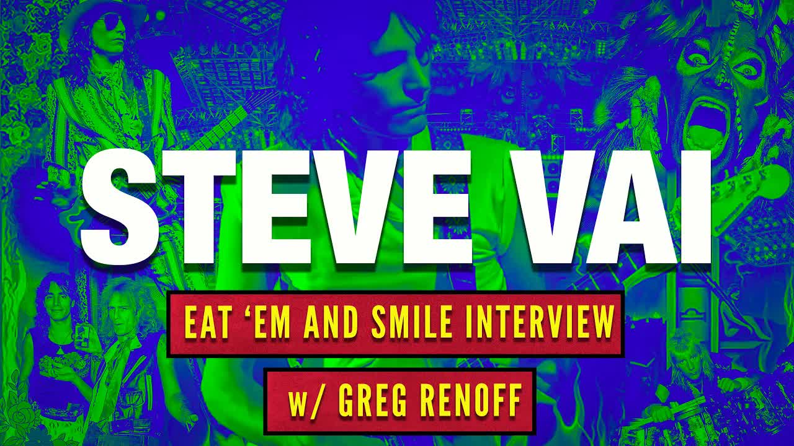

Great Pods
The Steve Vai Eat 'Em and Smile interview | w/Van Halen author Greg Renoff
Key Points
Steve Vai joined David Lee Roth's band in 1986 for the "Eat 'Em and Smile" album and tour
Dave Roth originally planned to make a movie incorporating the band's music, with choreography by Tony Basil
The movie project was shelved by studios or production issues before completion
Steve Vai had an instinctive knowing that the David Lee Roth gig was meant for him
The band recorded "Kids in Action" (originally a Kim Mitchell song) but chose "Tobacco Road" for the final album instead
Vai accidentally transcribed and nearly recorded "Bangkok" from the musical Chess, thinking he had written it himself
Dave Roth served as Vai's final major mentor, teaching him stage presence, movement, and confidence
The band was sequestered in Roth's basement for months writing and rehearsing
Their stage show held the Guinness World Record for most light cans on stage
The tour featured massive crowds and intense fan reactions, starting in Huntsville, Alabama
Vai experienced culture shock hearing his own music on the radio and seeing fans' reactions
Ted Templeman produced the album with a relaxed approach that contrasted with Vai's usual perfectionist habits
The Lucky Strike reunion show was cancelled seconds before they were supposed to perform due to fire marshal concerns
All band members remain open to an "Eat 'Em and Smile" 30th anniversary reunion tour
Greg Bissonette credited Dave Roth with giving him his "platinum passport" to worldwide recognition
Vai's previous mentors included his high school music teacher, Joe Satriani, and Frank Zappa
The band had complete creative freedom on stage and wore extravagant 1980s costumes
Dave Roth was initially looking at other guitarists including Steve Stevens before choosing Vai
Full Transcript
Language: en welcome back to the tapes archive podcast where we release interviews that have never been heard before in this episode we have Frank Zappa's Little Italian virtuoso and stunt guitar player Steve Vai in this neverbe heard 2016 interview Vai talks with author Greg renoff about the landmark David Le Roth album Ed him and smile at the time it was the 30th anniversary of the iconic album in the interview VI talks about the song he thought he wrote but didn't the rumored Kim Mitchell song The Jock that wasn't happy with VI and the infamous Lucky Strike reunion show that didn't happen the interview is conducted by Greg renoff renoff is the author of two Amazon best sellers and a mustre for music fans Van Halen rising and Ted templeman a platinum producer's life in music if you haven't read these books do yourself a favor and go get them now the article that was a result of this interview can be found on guitar world's website I will link it in the description I encourage all of you to go read it a big thanks to Steve VI and Greg renoff for allowing us to share this interview with you thanks for tuning in and now it's time to open the vault is it okay if I record this yeah please okay so I just had a few questions I've uh spent years as a fan I saw you guys in uh 86 and '87 on the Edom tour yeah in New Jersey it was great and uh so I read all the old interviews and um so I uh wanted to come uh upon this story in a way that I think maybe some other people hadn't which is to start with the the movie because I think that's sort of the Lost thread of the whole story there because if I understand correctly when Dave called you the first time at least the premise of the call was that he was going to make a movie which was going to happen of course and then um you guys were going to write songs for the movie well you're close Dave was putting together you know his plan was to put together a kickass rock band okay with exceptional players the movie was something that him and Pete Angelus were working on and we were going to incorporate whatever music we were writing for the record into the movie and it got pretty deep you know at one point we were actually looking at scripts and and they were you know sort of preparing the whole media campaign with their um the videos that they did as the Picasso Brothers and all that stuff I was so young and just so bewildered by everything and it was everything was just interesting and exciting and wild you know I mean uh I was ready to do anything and we had a lot of fun preparing for the movie we actually got together with I think it was Tony Basil was that the woman yeah and started working out choreography for the songs it was going to be really great and then personally I never knew what what happened I think there was some some kind of a something between Dave's production team and the movie studios where they either put it on the shelf or they right you know K killed it I'm not sure but next thing I knew it wasn't on the table anymore what's your sense on how the release would have been different perhaps if it had been a soundtrack I say that because I did some digging through billboard and some other things and Narada Michael Walden now Rogers Eros Smith all these little tidbits I see were they were saying they were writing songs for Dave or Dave had solicited songs from them do you have any sense of how that all was going to come together with you your original songs no because I never heard that um you're the first one telling me that it was probably before I was in the picture what you're saying sounds like maybe on their mind was the idea of taking a Hiatus from Van Halen and making this movie in which case I know they were they were reaching out to a bunch of people I don't know who but then once I showed up we just started writing music and I never really it could have been going on and I don't know nice to work with those guys yeah the other thing I always thought maybe they were just thinking that you know like in a movie you have to have obviously quite a bit of music for if it's going to be a rock Musical and maybe they were thinking like n Rogers was going to do like he he said like in the in the quote and billboard like a big band jazz score so maybe he was think they were thinking of little little parts that were going to be filled in by this music from other other guys but yeah it's interesting to hear you that sort of once you guys got rolling it was sort of that was all beside the point it would make sense to me that some of the scenes might have Incorporated big band stuff especially since you know Dave had songs like mat's life and just a jiggalo and Nile would have been perfect for all that the other thing of course is the uh the lost kids in action song which it sounds like again it was going to be the Kim Mitchell was initially contacted by Dave to supply music before you got into the band by Billy Billy had basically put Dave on to Kim and then you guys got down to the fact we actually recorded Kids In Action what do you remember about that tune in the whole way that song it turned out well when we had gotten into the basement and started jamming and riding and playing it was a very open free creative environment in that the thing that made most sense is reach out to everybody before I got in the band I know Dave was talking to some other guitar players uh I think Kim could have been one of them I know Steve Stevens was one of them was already tied up with the uh Billy Idol thing and there was I think there was some others I can't really really remember but the odd thing for me is that I was just a kid in an apartment and this the moment I heard that David L Roth was looking for a guitar player I just immediately and instinct ly had a knowing that it was my gig I don't know why you know sometimes those things that's just like this everything's connected and you know so I didn't really pay much attention to any of that other stuff but when I did get into rehearsals there were a couple of really good songs a whole bunch from outside sources and I know one of them was Kids In Action if we have a recording of any of that stuff it was just a basement cassette recording there was no formal formal recording that I remember yeah there's um I I'll send you actually so I got in touch with Jeff Hendrickson and it looks like when you guys wanted to Fantasy you guys did cut kids in actions from what Jeff has sheets yeah I'll send it to you I'll send you the sheet by email it's interesting so what kind funny that I don't even remember yeah I guess you're talking to the wrong guy no you're telling me this is great I mean this is why I talked to all these people and so Jeff Bova added keyboards at Power Station at the very end and then what Jeff remembers and what Ted told me was that it kind of came down to Kids In Action and Tobacco Road and for whatever reason I don't know why Tobacco Road was chosen over Kids In Action but it was it was finished uh from what I'm been able to tell I'll send I'd love to hear it I'd love to hear it because I don't remember recording it but I'm not very good at stuff like that you know I mean I write I write a lot of music back then the habit for me was to write music on tour like write it I would actually sit and compose and then uh at the end of the tour I just throw in a big pile because I could never record it all and then many years later I was working on a record called fire garden and I was going through all these papers all this manuscript stacks of manuscript and I found this one piece and it was in my handwriting and I I really uh liked it and I remembered writing it all and it was a a beautiful piece and it was a tossup between working on that piece or another piece that I had written while on tour so I decided to do this one and um I recorded it was a big epic piece it's like in four movements and and all this stuff and the first movement right before I handed the tapes into the label I played it for a friend and he goes oh I see you recorded Bangkok from uh uh the the play chess and I said what are you talking about this is I wrote this song and he goes no that song was written by Tim Rice and the guy from ABBA and I'm like well then they ripped it off from me somehow you know and then and he goes no Steve you gotta go and listen to this go buy that record and for [ __ ] sure man I uh I bought the record and I listened to it and it was it was exactly note for note the song that I had written and then I realized I called Dave something told me he was involved with he gave and then I remembered we were doing the in the beginning of the even smile rehearsals we were doing a putting the show together and he gave me a cassette with what he called a Hungarian Dance on it or something and he said learn this and show it to the band so like in between set changes you guys can play it so I trans he and what it was that he gave me was Bangkok from chess and I described the whole thing and just completely forgot and threw it in my pile of music so luckily I caught it in time and I was able to give the right credit and get permission that would have been a hard thing to explain like it was you know inadvertent I didn't know and it's like it's note for note yeah that how dare you stealing my music so as far I would be really curious to hear Kids In Action because frankly I just don't remember recording um I keep pounding Jeff Hendrickson the engineer to try to find a tape he thinks he might have a tape somewhere but yeah I'll send you the track she you can see it just to Circle back real quick does it make any sense then to you that maybe Dave had purchased songs from Aerosmith because I I'll send you this in this little press clipping that they say oh Dave told us about these two scenes and we're gonna write songs for the movie Joe again this may again this may have all predated before you get again but I'm wondering if any of that makes sense with the Kim Mitchell Kids In Action like they've had a sort of a small collection of songs that you guys could draw up on a pool if that makes any sense or is that not accurate you think well I know there was a Dave had some songs from the past that he really liked and I know Kids In Action was one of them and he used to I believe he used to refer to that song as snake killer because it was um The Snare was being hit so hard it looked like somebody was trying to kill a snake uh but there was other songs too and snake killer could have been another song but he had uh some songs but I don't recall any of them being written by Aerosmith okay with those guys so I don't I I would have that would have been on my radar for sure yeah interesting yeah I'll send you the little clipping it's it's again I'm going to guess now that I'm talking to you that maybe that was all you know Dave is done with Van Halen doesn't have a guitar player needs to get started on the movie what happens in this business a lot of times is you reach out to somebody with an idea and a proposal and all systems look like they're go so there's a tendency I do it all the time even though it's not a good practice is to leak it into the Press because you're excited about doing it yeah and you're talking people people always say what are you doing these days days and it's almost impossible to resist saying I'm writing something with Dave Roth at the time there was a lot of eyes on the band you know that might have happened where they talked about it but they never actually did it right yeah that but why are you gonna are you gonna interview Dave for all this well days a little hard to reach um I wrote this book um about the early days of Van Halen Van Halen rising and I I would hope that's a [ __ ] incredible book great I mean honestly I'm just so flattered well it's the it's the best as far as I I you know um My Hope was to try to talk to Dave after I talked to all you guys just say look but you know he's a little bit challenging for the average folk to reach you know and so um he's just I know he's just come back online he sort of had gone black over the last year he like gone offline no no social media nothing and so um I'm gonna try to get a message to him but uh we'll see if that can yeah that would happen that yeah I have a hard time getting a hold of him too sometimes because yeah he does his own thing I mean well he's always busy and he's always being productive and he doesn't waste time you'll talk to him and he'll say yeah I moved to New York for a year and I became a class a medic paramet you know and you're like of course you did because that's what you do that's the kind of thing that Dave would do he would I have pictures of him that he showed me tugging pulling in the he was in the water in the Amazon pulling a boat cuz they couldn't get the boat through the weeds I can't I mean the guy's intense man I can't tell you what I learned from him so the the article is going to conclude basically with the with the Lucky Strike thing but it's going to wrap up with the end of the uh the first tour the one with Billy what what's your your memories you're kind of now you look back on that what's your that you said you were young and it was obviously your first huge huge Rock gig what was your your experience with that well um sometimes you don't realize everything that's going on around you when you're in it so when I first met daavid was at his office and then the the next time was in a in his basement and we were sequestered in the basement for many many months writing and playing and writing and playing and Dave is a master at press too and he had you know we were sequestered I didn't know what was going on in the outside world I mean you got to remember I was just so young but it was exciting the thing that was so exciting to me was that the rawness of the music the intensity of the of the attitude of what we were going to try to accomplish what we were aiming on accomplishing having Billy as my brother in that band and what we did together and it was the perfect time it was like the timing couldn't have been more perfect all the elements came together the trends at that time were as you know in the 80s you could wear anything you wanted and boy did we ever you know you put on the biggest stage show I think uh you know our the amount of Light cans that we had on the stage is in the Guinness book of world's record and we played our ass off and Dave gave us ultimate Freedom you know infinite freedom on the stage basically to do whatever we wanted and it was just amazing to be on that tour when I got out on that tour it the thing that when it really all came home there was several moments one was when the record came out and I just started hearing it on the radio I start hearing it the matter of fact I was W the day after it came out I was walking out of the gym and I and I just walked into the parking lot and I got in this guy's way and uh kind of like a jock kind of a guy and he and he rolls down his window and he's screaming at me get the [ __ ] out of the way whatever he's saying and he's just J you know as he's jamming to the music in his car and he's listening to elephant gun and I'm like I'm looking at him and he's yelling at me and he's hello yeah no yeah hold on one second okay yeah hold on hello yeah hi sorry that was Z Wild Zach wild yeah we're doing a tour together so oh yeah yeah cool yeah so I was um I'm just laughing get your ass kicked to your own music it's like it's a soundtra I know and the guy I'm looking at the guy and he's and he's yelling at me with this you know freaked out look on his face while he's while his head is bobbing to my guitar that was hilarious and then this the second Awakening basically was the first show when we arrived at the hotel and the hotel was completely festooned with fans and they had to create like barriers to get in into the hotel and then the party but being on the stage that first night in Huntsville Alabama it was a shock because you're now a rock star performer and you got to deliver and that there was 20,000 people and at one point Dave does this thing where he just stops and puts the mic out you know and it went on for like 10 minutes and the screaming was so loud that I was it's if Billy and I were looking at each other we were like scared it was louder than our amps and I just thought what happened this is wild and then the parties and all were just just the best they KN really knows how to throw a party the whole tour was nothing but a a really wild cool amazing ride that I am so grateful I had an opportunity to be a part of I tell you I got one more question for you but I I'll tell you what I talked to Greg Bonet you may have been there when this happened I thought this was such a cool little story he told me he said that he gave gave a hug at Lucky Strike and said Dave I love you because you gave me my Platinum passport it's good all over the world I go anywhere I want and everyone you know kind of knows me because of your ban I thought that was like the coolest the coolest thing you know well I mean I could never when I when I do press and people ask me who my mentors are my first Mentor was my high school music teacher because he taught me for seven years every day how to write music and then I took lessons from Joe sat for three years and he was a powerful mentor and then I had the great uh Fortune to work for Frank Zappa for years and he was an incredible Mentor but every one of those people contributed vital things in my learning experience as a professional and an independent musician and then Dave was my you know real final major Mentor because what I learned from him there was no way I could get from anybody else when I joined that band I was gawky I looked like a noodle I uh you know I had no Charisma or stage presence and he worked really hard with me he he he took me to the gym five days a week without fail worked with me on stage on how to move and just watching him move was you know was just powerful and his confidence is fierce you it rubs off well the yeah the audacity of everything I mean even like the movie like you're saying cly quite hit you but I talked to Angelus about it too and you know it's like this whole they wanted to basically do in so many words like a hard days night me kids are all right or something like that you know like this you supposed to Pete I did I did yeah you know and that actually Pete told me it was you know which I don't think he's gone public about with that it was initially supposed to be for Van Halen I mean that was the original idea it was that hey you know what we're on the top of our uh our game right now it's late 1984 like to make a movie and those guys passed on that so hence they went on their own but you know the audacity of that type thing and say yeah you know but that's what have biggest star was that Greg Bonet told me the night he heard he was in the band for you know that Dave told him he got the gig Dave was on The Tonight Show with Joan Rivers I remember that's what he heard like over the top and I remember Pete you know mentioning that uh they they really wanted to do a a Van Halen movie I don't know what happened with that maybe the band wanted to not wanted to Pete would know but then nothing's going to stop Dave from doing what wants last question for you which is what do you see as a future for the Edom band well you know I in all those bands that I was in in the 80s and all the people I worked for I felt like I was a dutiful Soldier and that I contributed the best I could authentically because I really like that music but my heart was always in well my heart was in both places but there was also this brand of music that was just unique to me that I felt the need that I had to do that's not uncommon and I did it you know I I've been releasing solo records that I love for years and years and there was always the feeling that it would be great to do a a eat him and smile reunion tour I mean I would love to honor that record and that band because it was really a unique band and uh Dave he's always been you know very positive about that idea you know obviously there's a lot of moving parts and when we did the Lucky Strike thing it was almost like you know Rockstar interrupt us or something you we were ready to play and we were all psyched and we were just I mean people say that minutes before we went on the Fire Marshall came in but it was seconds I was standing with the in front of in back of the curtain just with the the hot guitar in my hands and I was ready to start we were psyched when when I when I was told we couldn't play I did everything I could to get us to play and we just couldn't and I thought we have to do something this is too much cool energy to yeah you know yeah and you know we had a little chat about it afterwards and dve was just very very receptive to anything that we would we'd want to do that would work out there's like I said there's a lot of moving parts I mean I'm I'm on tour until you know mid 2017 and um you know Greg is always with uh Ringo you everybody has things but we definitely put it out there that this is something we would like to do you know would it be an album and a and that kind of stuff I don't know I I wouldn't I wouldn't want to get that deep into it yet but the idea of a legacy honoring of the Edom and smile album and band well it's it's 30th anniversary and also I think would be really nice you know there's no big commitment there's no desire to be big rock stars or have a super group or sell millions of Records is it would be about getting out there and just bringing it home and you know the way we used to do it yeah we still have the juice we do it would be amazing I mean I tell you everyone I've talked to even when I talked to I talk to Ted's uh templeman not infrequently and you know he even says like oh I'd love you know I'd love to do that again it was just so great you know how great you guys were and just how blown away he was and you arranged all the music for I'm easy and then Greg Bonet called in all the session guys for on eing he just had a a blast making the record too so it seems to be was a blast working with him too gosh he such a wonderful approach it was a it was a blessed relief to the way that I usually work yeah I I don't want to keep you because I know you have other stuff to do but I'll tell you I've gotten a big kicked out of reading your old interviews I Now understand how Ted works and reading how you were you know you you wanted to punch in a million times and Ted be like no you did it like what are you talking about it was one it's not I remember we were doing like yeah we were doing elephant gun and I said well I want to double the part he goes what do you mean you know double it because it's all over the place and I go well I can double every single little thing perfectly and he said well he I actually felt like he didn't want to take the time and I said let me just let me just try it so I started doing it in the middle of the double I broke a string and Ted said well you know it's it's it's said probably just leave it with the one guitar you know then he left the studio and I finished it and then when he heard it he liked it so that's made yeah yeah yeah Ted always told me he wore two hats he was the VP of the you know by that point he was a record company VP I'm sure he was thinking like budget I don't know that but Mike just you know I wonder if he's like [ __ ] we're spending so much money here it's done it's good let's go you know so Steve listen it was a real thrill to talk to you and thank you so much for taking the time and uh do you need anything let me know because I really like the way you write you know there's an equilibrium there and you do your research really well and you're concerned about facts and anybody that you're going to write a book about I think is fortunate because uh it's a good document for their cache so anything I you I can do for you let me know oh a real thrill thank you so much Steve have a great day hey thanks for listening to the tapes archive podcast please remember you can always find more information about the show and the individual episodes at our website the tapes archive.com until next time the vault is closed
← All Summaries
Watch on YouTube